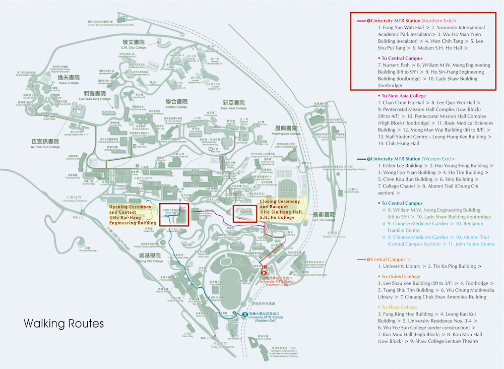

| Route 1 University MTR Station (Northern Exit) | |
|---|---|
1. School Bus Station (Bus No.1) (turn right from the MTR exit) |  |
2. Sir Run Run Shaw Hall (get off at the second stop) |     |
3. The University Mall |      |
4. Bridge to Ho Sin-Hang Engineering Building |     |
Route Map
Click to enlarge
Route 1: University MTR Station (Western Exit) to Ho Sin-Hang Engineering Building By School Bus
Route 2: University MTR Station (Northern Exit) to Ho Sin-Hang Engineering Building on Foot
| Route 2 University MTR Station (Northern Exit) | |||
|---|---|---|---|
1. Fong Yun Wah Hall (across from the MTR exit) |  | ||
2. Yasumoto International Academic Park (escalator) |    | ||
3. Wu Ho Man Yuen Building (escalator) |  | ||
4. Wen Chih Tang |   | ||
6. Madam S.H. Ho Hall |        | ||
8. William M.W. Mong Engineering Building (lift to 9/F)   9. Ho Sin-Hang Engineering Building (T.Y. Wong Hall, 5/F) | |||


{kind=link}
Route 3: From Ho Sin-Hang Engineering Building to S.H. Ho College
| Route 3: From Ho Sin-Hang Engineering Building to S.H. Ho College | |
|---|---|
1. Ho Sin-Hang Engineering Building (5/F) |  |
2. William M.W. Mong Engineering Building (9/F) |    |
3. William M.W. Mong Engineering Building (G/F) |  |
4. Nursery Path |      |
5. S.H. Ho College |  |